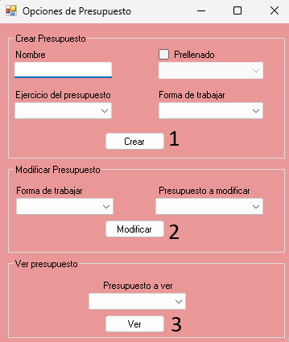

Ayuda Opciones
- 1.Botón Crear: Permite crear un nuevo presupuesto. Antes de hacerlo, es necesario completar los campos requeridos: Nombre, Año de ejercicio y Forma de trabajar. El campo Prellenado es opcional.
- 2.Botón Modificar: Utilizado para modificar un presupuesto ya creado. Se debe seleccionar tanto la forma de trabajo como el presupuesto que se desea editar.
- 3.Botón Ver: Permite visualizar un presupuesto existente. Solo es necesario seleccionarlo para revisar su contenido.